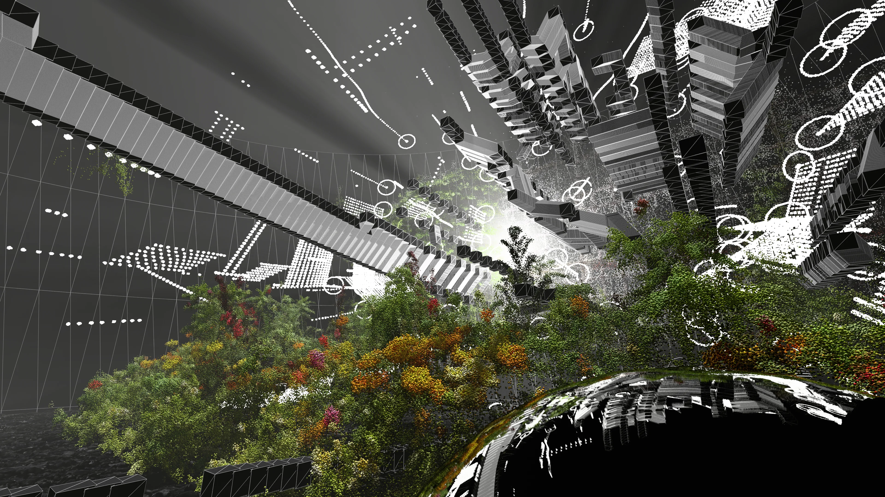

Overview / 项目简介
《控时者 / TIMER》与《滴流 / DROP FLOW》组成持续发展的环幕音画系列。作品针对音乐、全景画布与现场观看关系反复更新，形成长期维护的实时视觉实践。
Space
15K 环幕、观众包围式观看与全景内容组织
Works
《控时者 / TIMER》与《滴流 / DROP FLOW》
Practice
实时音画、现场演出、多艺术家协作与版本迭代
TIMER / 控时者
红、黑、白三色构成环幕中的时间刻度、粒子轨迹与现场观看关系。

Drop Flow / 滴流
这一组同时保留现场成片与预演画面，说明作品如何从结构测试迁移到全景环幕。





System / 系统
Built for return.
从环幕比例、全景拼接和视线安全区出发，建立可持续更新的视觉结构。每次演出根据音乐、艺术家与现场节奏调整内容，而不是把固定视频重复播放。
Credits / 项目署名
- Supported by / 创作支持
- UFO Terminal Loading Project / UFO 终端加载计划
- Format
- 15K panoramic screen / realtime audiovisual performance
- VIRTURA Role
- 实时视觉系统、环幕内容组织、空间预演与现场视觉制作
- Artists + Production
- 各章节合作名单待按公开物料逐项补全